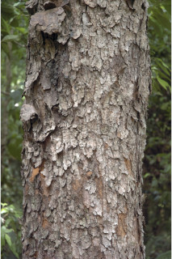
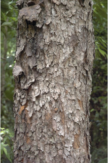
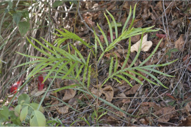
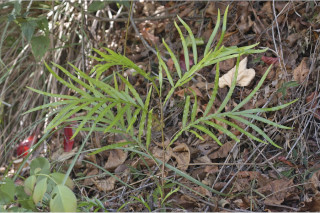

Large trees up to 25 m tall.
25 ಮೀ ಎತ್ತರದವರೆಗಿನ ದೊಡ್ಡ ಗಾತ್ರದ ಮರಗಳು.
Large trees up to 25 m tall.
பெரிய மரங்கள் 25 மீ. உயரம் வரை வளரக்கூடியது.
Bark brownish, irregularly flaky; blaze pinkish.
ತೊಗಟೆ ಕಂದು ಬಣ್ಣದಲ್ಲಿದ್ದು ಅನಿಯತವಾಗಿ ಚಕ್ಕೆಯೆದ್ದ ಮಾದರಿಯಲ್ಲಿರುತ್ತದೆ; ಕಚ್ಚು ಮಾಡಿದ ಜಾಗ ನಸುಗೆಂಪು ಬಣ್ಣ ಹೊಂದಿರುತ್ತದೆ.
Bark brownish, irregularly flaky; blaze pinkish.
மரத்தின் பட்டை ப்ரவுன் நிறமானது, ஒழுங்கற்ற பெரிய செதில்களாக உதிருபவை; உள்பட்டை பிங்க் நிறமானது.
Branchlets stout, angular, glabrous, with scars of fallen leaves.
ಕಿರುಕೊಂಬೆಗಳು ದೃಢವಾಗಿದ್ದು,ಕೋನಯುಕ್ತ, ರೋಮರಹಿತವಾಗಿದ್ದು ಉದುರಿದ ಎಲೆಗಳ ಗುರುತುಗಳ ಸಮೇತವಿರುತ್ತವೆ.
Branchlets stout, angular, glabrous, with scars of fallen leaves.
சிறிய நுனிக்கிளைகள் தடித்தவை, கோணங்களுடையது, உரோமங்களற்றது, இலைகள் உதிருவதனால் ஏற்படும் தழும்புகளுடையது.
Leaves compound, paripinnate or imparipinnate, 15-20 cm long, spiral; rachis distinctly winged; leaflets sessile, 8-12 (-17), usually opposite or subopposite, sometimes alternate, 4-13 x 1.5-2.5, linear-oblong, apex usually obtuse with retuse tip or rarely acuminate, base asymmetric or cuneate, margin entire, thinly coriaceous, glabrous; midrib raised above; secondary_nerves many, slender, fairly close, parallel; tertiary_nerves admedially ramified.
ಎಲೆಗಳು ಸಂಯುಕ್ತ ಹಾಗೂ ಸಮಗರಿ ಅಥವಾ ಅಸಮಗರಿ ರೂಪಿ ಮಾದರಿಯದಾಗಿದ್ದು 15 ರಿಂದ 20 ಸೆಂ.ಮೀ. ಉದ್ದವಿದ್ದು,ಸುತ್ತು ಜೋಡನಾ ವ್ಯವಸ್ಥೆಯಲ್ಲಿರುತ್ತವೆ;ಅಕ್ಷದಿಂಡು ಪ್ರಮುಖವಾದ ರೆಕ್ಕೆಗಳನ್ನು ಹೊಂದಿರುತ್ತವೆ;ಉಪಪತ್ರಗಳು ತೊಟ್ಟುರಹಿತವಾಗಿದ್ದು 8 ರಿಂದ 12(-17)ರ ಸಂಖ್ಯೆ ಹೊಂದಿರುತ್ತವೆ, ಸಾಮಾನ್ಯವಾಗಿ ಅಭಿಮುಖಿಗಳಾಗಿ ಅಥವಾ ಉಪಅಭಿಮುಖಿಗಳಾಗಿರುತ್ತವೆ,ಕೆಲವು ವೇಳೆ ಪರ್ಯಾಯ ಜೋಡನಾ ವ್ಯವಸ್ಥೆಯಲ್ಲಿ -ರುತ್ತವೆ, 4-13 X 1.5 – 2.5 ಸೆಂ.ಮೀ. ಗಾತ್ರ ಹೊಂದಿದ್ದು, ರೇಖಾತ್ಮಕ-ಚತುರಸ್ರದ ಆಕಾರ, ಅಗಲವಾದ ಮತ್ತು ದುಂಡನೆಯ ಅಗ್ರದಲ್ಲಿ ತಗ್ಗುಳ್ಳ ಚೂಪಲ್ಲದ ಅಥವಾ ಅಪರೂಪವಾಗಿ ಕ್ರಮೇಣ ಚೂಪಾಗುವ ತುದಿ, ಅಸಮ್ಮಿತಿಯಾದ ಅಥವಾ ಬೆಣೆಯಾಕಾರದ ಬುಡ,ನಯವಾದ ಅಂಚು,ತೆಳುತೊಗಲನ್ನೋಲುವ ಮೇಲ್ಮೈ ಹೊಂದಿದ್ದು ರೋಮರಹಿತ -ವಾಗಿರುತ್ತವೆ;ಮಧ್ಯನಾಳ ಮೇಲ್ಭಾಗದಲ್ಲಿ ಮೇಲೆದ್ದಿರುತ್ತದೆ; ಎರಡನೇ ದರ್ಜೆಯ ನಾಳಗಳು ಅಸಂಖ್ಯವಾಗಿದ್ದು,ತೆಳುವಾಗಿರುತ್ತವೆ, ಬಹುಮಟ್ಟಿಗೆ ಕಡಿಮೆ ಅಂತರ ಹೊಂದಿದ್ದು , ಸಮಾಂತರ ಹೊಂದಿರುತ್ತವೆ;ಮೂರನೇ ದರ್ಜೆಯ ನಾಳಗಳ ಕವಲುಗಳು ಎಲೆಯ ಅಕ್ಷದ ಕಡೆಗಿರುತ್ತವೆ.
Leaves compound, paripinnate or imparipinnate, 15-20 cm long, spiral; rachis distinctly winged; leaflets sessile, 8-12 (-17), usually opposite or subopposite, sometimes alternate, 4-13 x 1.5-2.5, linear-oblong, apex usually obtuse with retuse tip or rarely acuminate, base asymmetric or cuneate, margin entire, thinly coriaceous, glabrous; midrib raised above; secondary_nerves many, slender, fairly close, parallel; tertiary_nerves admedially ramified.
இலைகள் கூட்டிலை, இரட்டைபடை சிறகுவடிவக்கூட்டிலை (பேரிபின்னேட்) அல்லது ஒற்றைபடை சிறகு வடிவக்கூட்டிலைகள், 15-20 செ.மீ. நீளமானது, சுழல் போன்று அமைந்தவை; மத்தியகாம்பு (ராக்கிஸ்) இறகுடையது; சிற்றிலை காம்பற்றது, 8-12 (-17), எதிரடுக்கமானவை அல்லது கிட்டதட்ட எதிரடுக்கமானவை, சிலசமயங்களில் மாற்றுஅடுக்கமானவை, 4-13 X 1.5-2.5, கோட்டு வடிவானது-நீள்சதுர வடிவானது, அலகின் நுனி மெட்டையானது மற்றும் சிறு பிளவுடையது (ரெட்யூஸ்) அல்லது அரிதாக அதிக்கூரியது, அலகின் தளம் சமமற்றது அல்லது ஆப்பு வடிவானது, அலகின் விளிம்பு முழுமையானது, மெல்லிய கோரியேசியஸ், உரோமங்களற்றது; மையநரம்பு மேற்புறத்தில் அலகின் பரப்பைவிட உயர்ந்து இருக்கும்; இரண்டாம் நிலை நரம்புகள் எண்ணற்றது, மெல்லியவை, நெருக்கமானவை, இணையானவை; மூன்றாம் நிலை நரம்புகள் அட்மீடியல்லி ராமிபைடு.
Inflorescence axillary panicle; flowers small, polygamous; pedicel 0.3 cm long.
ಪುಷ್ಪಮಂಜರಿಗಳು ಅಕ್ಷಾಕಂಕುಳಿನಲ್ಲಿರುವ ಪುನರಾವೃತ್ತಿಯಾಗಿ ಕವಲೊಡೆಯುವ ಮಾದರಿಯವು; ಹೂಗಳು ಸಣ್ಣ ಗಾತ್ರದಲ್ಲಿದ್ದು ಸಂಕೀರ್ಣಲಿಂಗಿಗಳಾಗಿರುತ್ತವೆ; ತೊಟ್ಟು 0.3 ಸೆಂ.ಮೀ. ಉದ್ದ ಹೊಂದಿರುತ್ತದೆ.
Inflorescence axillary panicle; flowers small, polygamous; pedicel 0.3 cm long.
மஞ்சரி இலைக்கோணங்களில் காணப்படுபவை, பேனிக்கிள் வகை மஞ்சரி; மலர்கள் சிறியவை, பாலிகேமஸ்; மலர்காம்பு 0.3 செ.மீ. நீளமானது.
Drupe, purple, shining, apiculate, 1.3 cm across, 1-seeded
ಡ್ರೂಪ್ಗಳು ಕೆನ್ನೀಲಿ ಬಣ್ಣ ಹೊಂದಿದ್ದು,ಹೊಳಪನ್ನು ಹೊಂದಿರುತ್ತವೆ ಮತ್ತು ಅಗ್ರದಲ್ಲಿ ಸೂಕ್ಷ್ಮ ಮೊನಚು ಮುಳ್ಳಿನ ಸಮೇತವಿರುತ್ತವೆ, ಗಾತ್ರದಲ್ಲಿ1.3 ಸೆಂ.ಮೀ. ಅಡ್ಡಗಲತೆಯನ್ನು ಹೊಂದಿರುತ್ತವೆ;ಬೀಜಗಳ ಸಂಖ್ಯೆ 1.
Drupe, purple, shining, apiculate, 1.3 cm across, 1-seeded
உள்ளோட்டுத்தசைகனி (ட்ரூப்), பர்புள் நிறமானது, பளபளப்பானது, நீட்சியுடையது, 1.3 செ.மீ. குறுக்களவுடையது, ஒர் விதையுடையது.
 

 
